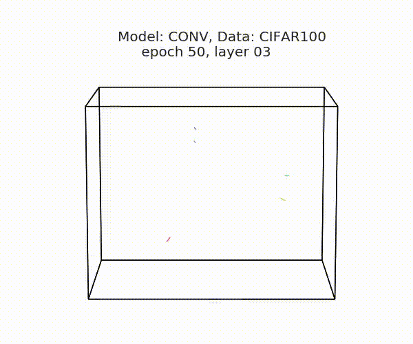
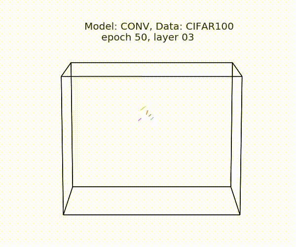
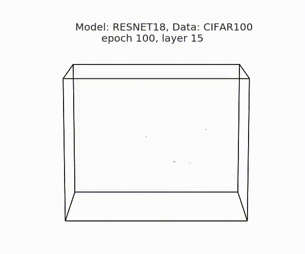

Qihong Lu
Home
Teaching


Demo: rigid-body transformations can align hidden representational spaces across neural networks
poster, paper, code, tutorial on google colab, some animationsWhen many instantiations of the same neural network architecture are trained on the same dataset, these networks tend to approximate the same mathematical mapping with very different weight configurations. What's the connection across these learned neural network solutions? In our recent work, we found the learned hidden representations across neural networks can be related by orthogonal transformations, which can be viewed as some rigid-body transformations.
Here we visualize the neural dynamics when all networks are viewing the same sequence of images (2000 images from CIFAR100 test set).
- All networks are trained on the same training set.
- Each line is a different neural network instance.
- We aligned these networks with the shared response model.
- Caveat: These results are three-dimensional PCA projections of some high dimensional neural dynamics (dim = # hidden units), so they should be interpreted carefully.
The animations below shows the neural dynamics of 5 conv nets (the last hidden layer) before alignment (Fig 1A). vs. after alignment (Fig 1B). High degree of alignment would suggest the geometry of the hidden representation across networks are highly similar. Namely, different neural networks learn different orthogonal transformations of the same representational structure.

Fig 1A, ConvNets, before alignment

Fig 1B, ConvNets, after alignment
Here're the animations for 5 ResNet18 (layer 15) before (Fig 2A) vs. after alignment (Fig 2B). A more quantitaively analysis revealed that orthogonal transformations explained less variance for ResNet alignment, compared to ConvNets, suggesting high capacity models can learn representations that are more qualitatively different.

Fig 2A, ResNets, before alignment

Fig 2B, ResNets, after alignment
References:
[1] Shared representational geometry across neural networks.
Lu, Q., Chen, P. H., Pillow, J. W., Ramadge, P. J., Norman, K. A., & Hasson, U.
Workshop on Integration of Deep Learning Theories, NeurIPS 2018.
poster, paper, code, tutorial on google colab, some animations
[2] SRM is implemented in BrainIAK
Chen, P.-H., Chen, J., Yeshurun, Y., Hasson, U., Haxby, J., & Ramadge, P. J. (2015). A Reduced-Dimension fMRI Shared Response Model. In Advances in Neural Information Processing Systems 28 (pp. 460–468).
[3] A huge thanks to hypertools, the package I used to make these animations.
Heusser, A. C., Ziman, K., Owen, L. L. W., & Manning, J. R. (2018). HyperTools: a Python Toolbox for Gaining Geometric Insights into High-Dimensional Data. Journal of Machine Learning Research: JMLR, 18(152), 1–6.